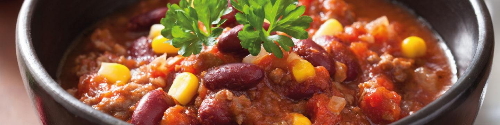
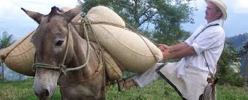

La bandeja paisa es, sin duda, uno de los platos más reconocidos de la gastronomía colombiana. Es tradicional de las tierras antioqueñas, pero se consume en todo el país e incluso en el extranjero, donde ha llegado de la mano de migrantes colombianos.
¿Qué ingredientes se necesitan para hacer una bandeja paisa para 6 personas?
- 3 tazas de fríjoles de cargamanto o rojos
- 2 libras de carne molida
- 2 libras de chicharrón
- 2 libras de carne pulpa molida
- 6 chorizos
- 6 huevos
- Sal al gusto
- 1 libra de arroz
- 3 Plátanos maduros
- 4 cebollas grandes
- 4 tomates
- 1 zanahoria mediana
- Medio plátano verde
- Aceite
El éxito de la bandeja paisa está en la preparación de los fríjoles
Para que tus fríjoles sean más fáciles de cocinar, debes ponerlos a remojar en un recipiente con agua. Déjalos toda la noche para que estén más blandos a la hora de ponerlos a cocinar.
Prepara el hogao picando finamente las cebollas y los tomates. En una sartén con un poco de mantequilla y ajo al gusto, ponlos a sofreír durante diez minutos.
Para la cocción de los fríjoles utiliza la olla exprés, esto te ahorrará un poco de tiempo. Agregar y cubrir con agua y échales la mitad del hogao, medio plátano verde y la zanahoria mediana partida en trozos. Déjalos pitar aproximadamente por media hora.Después que hayan pitado, sácales la zanahoria, el plátano y una taza de agua y licuar. Agrega esta mezcla a los fríjoles nuevamente y ponlos a fuego medio bajo a espesar.
Una historia deliciosa
Como su nombre lo indica la bandeja paisa es una preparación antioqueña, sin embargo contiene una mescolanza entre el mundo indígena, por los frijoles caramantos y costumbres alimenticias europeas con el arroz.
Pero detengámonos un poco, la bandeja paisa la encontramos en la mayoría de los restaurantes, fincas y casas de Colombia. Su popularidad se debe, entre otras cosas, a la enorme cantidad de alimentos que la componen, varios tipos de carne, un encurtido, granos, plátano, huevos, en fin; al tener dicha cantidad de ingredientes en un plato es ideal para recuperar fuerzas después de una ardua labor recogiendo café o después de haber recorrido un largo camino a lomo de mula o en camión cruzando alguna de las cordilleras o simplemente para darse un gusto el fin de semana comiendo un plato especial, y claro, es tan especial que en el año 2005 el gobierno de turno inició un campaña para volver a la bandeja paisa el plato nacional.
Uno de los detalles más típicos de la bandeja paisa es el plato donde se sirve, por lo general y lo más tradicional es que sirva en una vasija de barro negro, sin duda este detalle nos conecta con las costumbres y el tesón de los arrieros paisas. En Pereira por ejemplo, antes de servir la bandeja se pone en la mesa media botella de aguardiente, se sirve un trago para cada comensal y luego de beberse el popular “guarito” ya es momento de empezar con la bandeja.
Desde 4 mil quinientos pesos a modo de corrientazo para los obreros de las construcciones, pasando por los 30 mil pesos en los restaurantes de grandes propinas y en las fincas del viejo Caldas, la bandeja paisa es un símbolo de la comida colombiana.